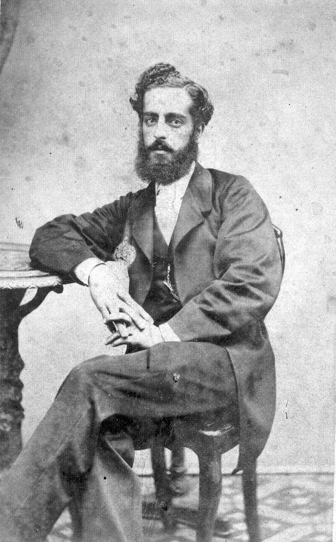

Ya estás en esta página
En 1968, Varela funda con Carlos María Ramírez, Elbio Fernández y otros, la Sociedad de Amigos de la Educación Popular (o SAEP para usar sus siglas).
Cabe aclarar que Varela murió joven. Ardao, sobre el Varela del 67 (cuando tenía 22 años) dice:
“Debe desterrarse, sin embargo, la habitual imagen del despistado joven lírico, que a vueltas de una visita a Víctor Hugo con unos versos bajo el brazo - los Ecos perdidos que editaría en Nueva York -, tiene entonces la súbita revelación del drama educacional de su pais y de su tiempo.” pág.3 (1964, Ardao, La educación Popular Tomo 1, ed Juan E. Pivel Devoto)
José Pedro Varela
Es importante mencionar que la obra original (la educación del pueblo, 1874) fue reeditada en 1910. La versión usada para este trabajo es otra re-edición hecha en 1965 que fue supervisada por Juan Ernesto Pivel Devoto. Cuyo prólogo fue escrito por Arturo Ardao, el cual tiene estas palabras sobre Varela:
“Un complejo y memorable conjunto de circunstancias, biográficas e históricas, culturales y políticas, materiales e ideológicas, determinaron en la existencia de su autor, de mediados de 1874 a mediados de 1876.“ pág.1 (1964, Ardao, La educación Popular Tomo 1, ed Juan E. Pivel Devoto)
Para comprender los libros, explica Ardao, hay que ponerlos en contexto de la vida pública de Varela. Esta empieza el 7 de mayo de 1865 (a sus 20 años) cuando escribe en el primer número de la “Revista Literaria” (una serie de artículos de polémica religiosa) y termina con su fallecimiento el 24 de octubre de 1879 (a sus 34 años). Ardao marca dos etapas para el estudio de la vida de Varela. La primera, hasta 1968 y la segunda desde la misma fecha hasta 1979.
Los primeros tres años de la vida pública de Varela, fue una “una ardiente campaña racionalista” (pág. 2 Ardao) influida por Francisco Bilbao. Donde colaboró escribiendo para la “Revista Literaria” y el diario “El Siglo”. En septiembre del 67 Varela realiza viajes por USA y Europa, estando 11 meses viajando por el “mundo”.
En 1968, Varela funda con Carlos María Ramírez, Elbio Fernández y otros, la Sociedad de Amigos de la Educación Popular (o SAEP para usar sus siglas).
Cabe aclarar que Varela murió joven. Ardao, sobre el Varela del 67 (cuando tenía 22 años) dice:
“Debe desterrarse, sin embargo, la habitual imagen del despistado joven lírico, que a vueltas de una visita a Víctor Hugo con unos versos bajo el brazo - los Ecos perdidos que editaría en Nueva York -, tiene entonces la súbita revelación del drama educacional de su pais y de su tiempo.” pág.3 (1964, Ardao, La educación Popular Tomo 1, ed Juan E. Pivel Devoto)
En una de sus colaboraciones para la “Revista Literaria” escribe Varela:
No necesitamos poblaciones excesivas; lo que
necesitamos es poblaciones ilustradas. El día en que
nuestros gauchos supieran leer y escribir, supieran pensar,
nuestras convulsiones políticas desaparecerían quizá.” (La Revista Literaria, 1855, citado en Ardao, 1964, pág. 3)
En la segunda etapa de la vida pública y política de Varela, cuando se había convertido en un “apóstol de la educación común” (pág 4, Ardao), está subdividida en tres períodos. La primera desde la fundación de la SAEP, hasta mayo de 1874. Un segundo período desde el 74, donde redactaría La Educación del Pueblo, hasta marzo del 76 (pasando por el “episodio” como lo menciona Ardao del 75). Finalmente, el tercer período, desde el 76 hasta su fallecimiento, donde, bajo el coronel Latorre, asume la dirección de la instrucción pública.